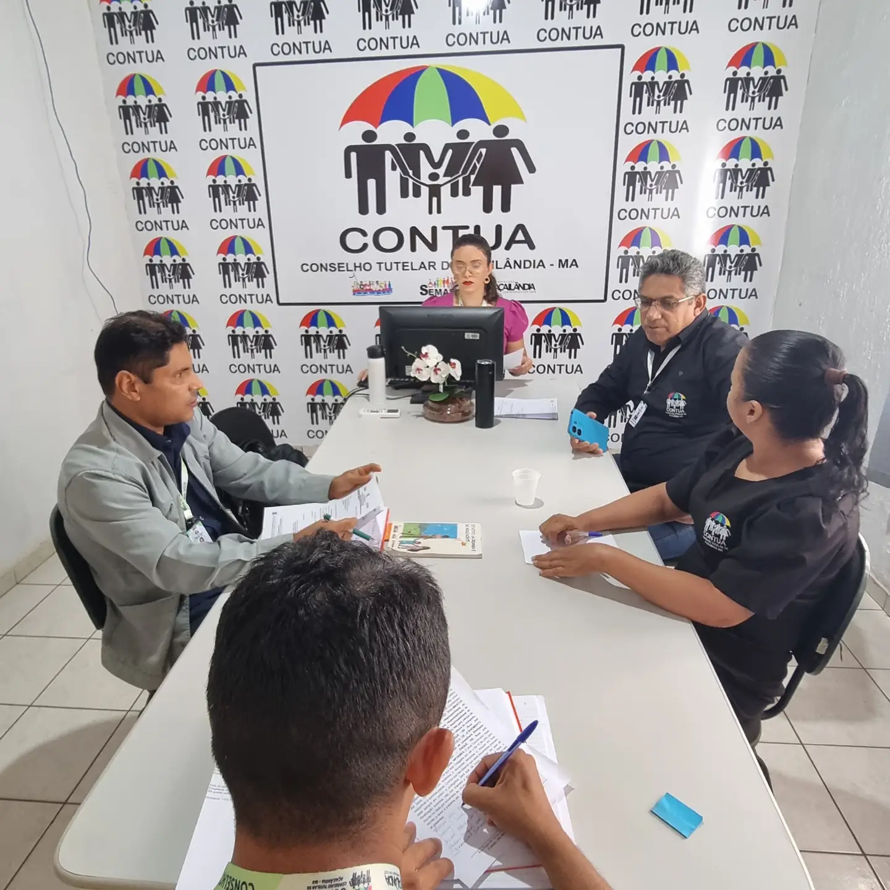
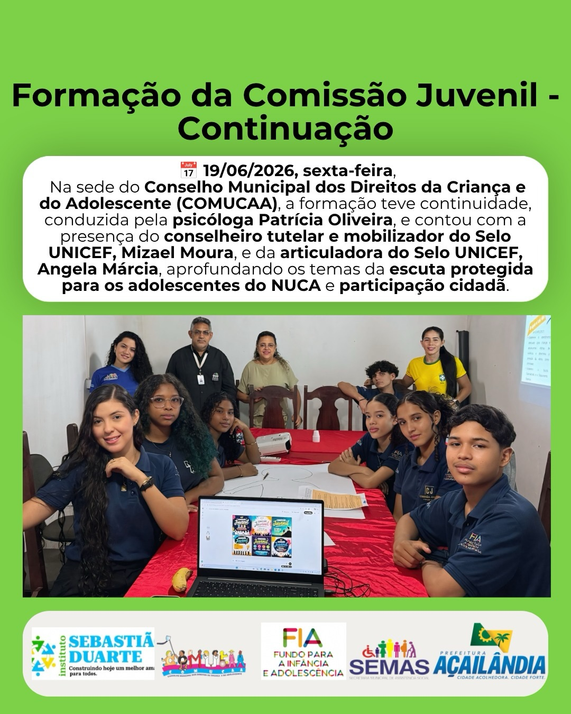

CONSELHO TUTELAR DE AÇAILANDIA-MA
O conselho tutelar desempenha um papel crucial na prevenção e combate à exploração infantil, no amparo a vítimas de violações de direitos e na promoção de políticas públicas que visam ao bem-estar das crianças e dos adolescentes. Sua proximidade com a comunidade permite uma resposta rápida e efetiva a situações de risco.

MUITO PRAZER NÓS SOMOS O CONSELHO TUTELAR
O conselho tutelar é uma criação do ECA, promulgado em 1990, como uma das instituições encarregadas de zelar pelos direitos da criança e do adolescente. Sua atuação é autônoma e independente, permitindo uma intervenção imparcial em situações de violação de direitos.
Nosso município detém o selo UNICEF (Esta é uma certificação internacional concedida pelo Fundo das Nações Unidas para a Infância)
Ter o Selo UNICEF significa que um município brasileiro alcançou avanços reais na melhoria das condições de vida de crianças e adolescentes
LINHAS DE ATUAÇAO
NOSSAS AÇÕES E PROJETOS


